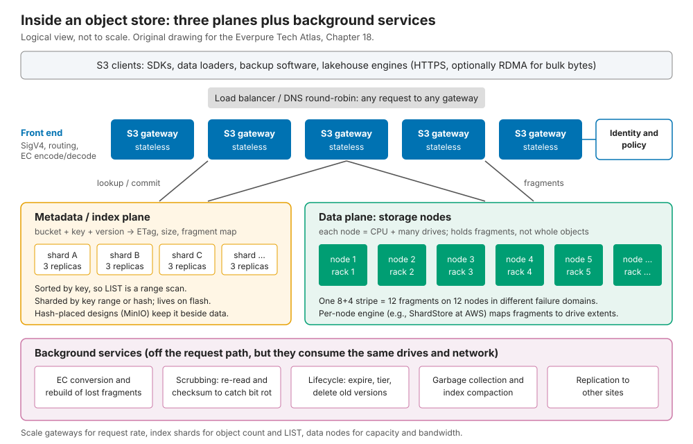

18. Object storage architecture¶
Depth: L2 · Reading time: ~8 min · Last verified: 2026-11-01 Prerequisites: Object storage and S3 · Data protection and resilience · Scale-out shared-nothing clusters
TL;DR¶
- An object store has three planes: stateless S3 gateways, an index mapping keys to fragments, and data nodes holding erasure-coded fragments, with background services behind them.
- The index decides most outcomes. A sharded metadata database makes LIST cheap. Hashing the key to compute placement (MinIO) removes the database bottleneck but turns LIST into a cluster-wide fan-out.
- Erasure coding across sites is the capacity lever. 6+3 over three sites stores 1.5× raw versus 2–3× for replication, at the price of WAN reads and multi-day site rebuilds.
- The scaling walls are object count, small objects and tail latency. Disks are rarely the limit.
- Object storage is moving from cheap-and-deep to fast. On all-flash object, the metadata engine matters more than $/TB.
Why this matters for Everpure strategy¶
Chapter 9 showed S3 becoming the default AI data interface. Behind the API, systems differ sharply: a fast endpoint over a slow index still lists a billion keys slowly. When an AI buyer weighs FlashBlade against MinIO AIStor, Cloudian or Dell ObjectScale, deals turn on internals: objects per bucket, LIST rate, the cost of a small PUT, and what happens when a node dies.
Pure Storage built FlashBlade as all-flash object while object still meant disk archives. Now that rivals are on flash too, does its metadata engine still differentiate?
Core concepts¶
The idea in one picture¶

Figure 18.1 — Gateways, index and data nodes scale independently: gateways for request rate, the index for object count and LIST, data nodes for capacity and bandwidth.
- Gateways terminate HTTPS, check SigV4 and policy, choose placement and erasure-code; they hold no durable state.
- The index is a replicated, sharded table keyed by bucket + key + version, holding size, ETag and fragment map, sorted so LIST is a range scan.
- Data nodes map fragments to disk extents with a local engine. AWS's engine, ShardStore, is a key-value store of roughly 40,000 lines of Rust, validated with lightweight formal methods1. It is LSM-based but keeps shard data outside the tree to limit write amplification2.
S3's index design is unpublished; its scale is not: over 500 trillion objects and 200 million requests per second (March 2026)3.
Where metadata lives: a database or a hash¶
- A separate metadata database. Cloudian HyperStore uses Cassandra for metadata and small objects4. StorageGRID uses Cassandra with three copies per site5. Ceph RGW keeps bucket indexes in RocksDB-backed omap, resharding above 100,000 objects per shard67. FlashBlade runs a distributed key-value database across its blades8.
- Computed placement, with metadata stored beside the data. MinIO hashes the object name to pick an erasure set of 2–16 drives and has no metadata database910. Objects under about 128 KiB are stored inline in the metadata file11. Scality RING places keys on a Chord-style ring12. So does Ceph's CRUSH (Chapter 15).
Semiconductor bridge: page table versus set-associative cache. An index database is a page table, with the gateway cache as its TLB: data can live anywhere, but a miss costs a walk. Hash placement is a set-associative cache: address bits pick the set, no table needed. But a cache cannot be enumerated in address order, so LIST on a hash-placed store queries every erasure set and merge-sorts the replies.
Tracing a PUT¶
sequenceDiagram
participant C as Client
participant LB as Load balancer
participant G as S3 gateway
participant A as IAM and policy cache
participant I as Index shard
participant D as 12 data nodes
C->>LB: PUT bucket/key with 64 MB body
LB->>G: route to any healthy gateway
G->>A: verify SigV4 and bucket policy
A-->>G: allow
G->>I: get placement for bucket/key
I-->>G: erasure set or chunk allocation
alt object below inline threshold
G->>I: store bytes inside the index record
else large object
G->>G: cut into 8 data and 4 parity fragments
G->>D: stream fragments with checksums, one per failure domain
D-->>G: write quorum reached
end
G->>I: conditional commit of new version and fragment map
I-->>G: committed on index quorum
G-->>C: 200 OK with ETag
Note over I,D: Later - scrub, rebalance, lifecycle, GC of old versionsFigure 18.2 — Data becomes durable first and visible second: the index commit is the single point where a new version appears to every reader.
Worked example (write amplification). A 64 MB PUT under 8+4 coding writes twelve 8 MB fragments, 96 MB in all (1.5×). Gateway NICs carry 64 MB in and 96 MB out, 2.5× the client bandwidth. A 4 KB object under the same code would make 512 B fragments, each padded to a 4 KiB sector: 48 KiB on disk (12×) and 12 drive writes. So systems inline small objects (MinIO, Cloudian) or mirror first and erasure-code later. Dell ObjectScale triple-mirrors until a 128 MB chunk fills, then converts it to 12+413.
Tracing a GET¶
sequenceDiagram
participant C as Client
participant G as S3 gateway
participant K as Gateway metadata cache
participant I as Index shard
participant D as Data nodes
C->>G: GET bucket/key, optional Range
G->>G: verify SigV4 and policy
G->>K: location cached and still current?
alt miss or stale
G->>I: read latest committed version
I-->>G: version, ETag, fragment map
end
G->>D: request 8 data fragments plus 1 hedge
D-->>G: first 8 fragments to arrive
G->>G: decode only if a data fragment is missing, verify checksum
G-->>C: 200 or 206 with bytesFigure 18.3 — A GET waits for the slowest of k fragment reads, so tail latency comes from the wide stripe, not the average drive.
Worked example (tail latency). Suppose each node stalls 1% of the time. Waiting on 8 specific fragments, 1 − 0.99⁸ ≈ 7.7% of GETs stall. Asking 9 nodes and using the first 8, a GET stalls only if two are slow: 1 − (0.99⁹ + 9 × 0.01 × 0.99⁸) ≈ 0.34%. Spending 12% more reads buys a roughly 20× better tail.
Erasure coding across nodes and sites¶
Semiconductor bridge: chipkill. Server ECC spreads each codeword across DRAM chips so a dead chip is correctable; object stores spread stripes across nodes, racks or sites. Wider spread means cheaper protection and dearer reconstruction.
flowchart TB
subgraph A["A. Three full copies, one per site"]
A1["Site 1: copy"] --- A2["Site 2: copy"] --- A3["Site 3: copy"]
end
subgraph B["B. Local 12+4 at two sites, mirrored"]
B1["Site 1: 16 fragments"] --- B2["Site 2: 16 fragments"]
end
subgraph C["C. Geo 6+3 across three sites"]
C1["Site 1: fragments 1-3"] --- C2["Site 2: fragments 4-6"] --- C3["Site 3: fragments 7-9"]
end
A --> AR["3.0x raw, local reads, async copy lag"]
B --> BR["2.67x raw, local reads, survives site plus 4 nodes"]
C --> CR["1.5x raw, every read crosses WAN, zero margin after site loss"]Figure 18.4 — Geo-dispersed erasure coding halves raw capacity against replication but puts the WAN on every read and every rebuild.
| 10 PB usable | Raw capacity | Survives site loss? | Normal GET | Rebuild after a site loss |
|---|---|---|---|---|
| A. 3 copies, 3 sites | 30 PB | Yes, 2 copies left | Local | Re-copy 10 PB |
| B. 12+4 per site, 2 sites | 26.7 PB | Yes, plus 4 node losses | Local | Re-copy 10 PB from one site |
| C. 6+3 across 3 sites | 15 PB | Yes, zero margin left | ≥3 of 6 fragments over WAN | Read 10 PB over WAN to rebuild 5 PB |
Table 18.1 — Worked example: geo-EC saves 15 PB raw per 10 PB usable, but leaves data unprotected during a multi-day rebuild.
StorageGRID documents 1.5× for 6+3 over three sites and advises against it above 100 ms inter-site latency1415. A site rebuild pulls twice the lost data over the WAN16. In case C, rebuilding 5 PB moves 10 PB: 800,000 s (~9.3 days) at 100 Gb/s. AWS spreads S3 Standard across at least three Availability Zones, targeting eleven nines17; metro distances keep the penalty small.
How it scales and where it hits walls¶
- Index and LIST. Index size grows with object count, not bytes. At an illustrative ~500 bytes per record and 3 replicas, 100 billion objects need ~150 TB of index flash. LIST speed depends on index design and client parallelism: Pure Storage listed a 67-billion-object FlashBlade bucket in ~43 hours with a parallel Go client18, which works out to 67e9 ÷ 154,800 s ≈ 433,000 keys/s. A single thread at 20 ms per 1,000-key page would need ~15.5 days.
- Small objects multiply records, drive I/Os and request overhead (see the 12× example).
- Hot shards. Sequential keys such as timestamps pile onto one index range. Ceph briefly blocks a bucket's writes while it reshards6.
- Background debt. Scrubbing, rebuild, expiry and garbage collection compete with clients.
Failure handling¶
| Failure | What happens | Cost |
|---|---|---|
| Drive | Fragments rebuilt from k survivors onto many drives in parallel | Background bandwidth; degraded reads decode on the fly |
| Data node | Its fragments rebuilt elsewhere; GETs read other fragments meanwhile | Rebuild traffic ≈ k × lost data |
| Gateway | Load balancer drops it; clients retry | In-flight requests retried; no data at risk |
| Index replica | Quorum continues on remaining replicas | Lose quorum and that shard's keys are unwritable though data is intact |
| Network partition | Minority side cannot commit; quorum prevents split-brain | Writes fail on one side, CAP in practice (Ch 20) |
| Site | Replication fails over; geo-EC serves degraded reads | See Table 18.1 |
Table 18.2 — Data-node failures are routine; losing index quorum is the outage that matters.
Pros, cons and fit¶
| Strength | Weakness | |
|---|---|---|
| Scale | Hundreds of trillions of objects, exabytes, no directory tree to lock | Object count stresses the index; LIST is the slowest operation |
| Efficiency | Wide and geo erasure codes (1.3–1.5×) on commodity servers | Small objects defeat erasure coding; need inlining or packing |
| Resilience | Node and site loss survivable by design | Rebuilds are long and wide; index quorum is a single point of logic |
| Performance | Bandwidth scales with nodes; parallel range GETs | Per-request fixed cost; tail latency from wide stripes |
| Semantics | Immutable whole objects, simple consistency | No in-place updates, no rename, thin metadata |
Table 18.3 — Object storage trades rich semantics for scale and capacity efficiency.
Best fit: sharded AI datasets, checkpoints, lakehouse tables, backup, archive, media. Worst fit: in-place-write databases and VMs, tiny files renamed often, POSIX tools that need directories.
From cheap-and-deep to fast¶
HDD-era object stores were built around a disk's ~100–200 random IOPS: big chunks, metadata on a thin flash slice, tens of milliseconds of latency. Flash removes the IOPS-per-TB constraint, so metadata and small objects share fast media. Falling QLC $/TB, S3-native AI pipelines and RDMA into GPU memory make it pay (Chapter 9).
| Signal (vendor-stated, not comparable) | Claim | Source |
|---|---|---|
| MinIO on NVMe | 325 GiB/s GET from 32 nodes | MinIO19 |
| Cloudian HyperStore on flash | ~200 GiB/s from 6 nodes (~35 GiB/s each) | Cloudian20 |
| Scality RING XP | Microsecond-level 4 KB PUT/GET latency | Scality, 2024-10-3021 |
| Dell ObjectScale XF960 | All-flash appliance positioned for AI | Dell, 202522 |
| FlashBlade//E | >3 trillion objects in one array | Pure Storage23 |
Table 18.4 — Every major object vendor now markets flash performance; object count and latency claims are the new battleground.
Cost and operational implications¶
Software-defined object storage on dense HDD servers is still the lowest $/TB. Its hidden cost is operations: index repair and compaction, rebalancing, scrubbing and multi-site networking. In StorageGRID, the smallest node caps a site's metadata capacity5. Licensing can also shift: MinIO's community edition entered maintenance mode in December 202524. Appliances cost more per TB but remove most of it (Chapter 19).
How Everpure approaches it vs. competitors¶
| System | Index / metadata | Placement and protection | Media | Public data point |
|---|---|---|---|---|
| Everpure FlashBlade | Distributed key-value metadata across blades, shared with NFS/SMB | NVRAM write staging, then wide N+2 erasure coding across blades825 | All-flash (DirectFlash) | 3 T objects on one //E23; 67 B-key LIST in ~43 h18 |
| AWS S3 | Not published | ≥3 AZs; ShardStore on storage nodes117 | Not disclosed | 500 T+ objects, 200 M+ req/s3 |
| MinIO AIStor | None; xl.meta beside data |
Hash to 2–16-drive erasure set10 | NVMe or HDD | 325 GiB/s GET, 32 nodes19 |
| Cloudian HyperStore | Cassandra; small objects inline4 | Replication or EC per policy | HDD and flash | ~35 GiB/s per node claimed20 |
| Ceph RGW | Sharded bucket index in RocksDB omap7 | 4 MB RADOS objects; replicated or EC pools7 | Any | 100 k objects per index shard6 |
| NetApp StorageGRID | Cassandra, 3 copies per site5 | ILM rules; 6+3 across 3 sites14 | HDD and flash appliances | Geo-EC below 100 ms latency14 |
| Dell ObjectScale | Chunk-based store | 128 MB chunks, 12+4 or 10+213 | XF960 all-flash22 | ECS heritage |
| Scality RING | Chord-style key ring12 | Replication or EC | RING XP all-flash21 | µs-level 4 KB latency claimed |
Table 18.5 — Every vendor now has a flash object story; they differ in where the index lives and how protection crosses failure domains.
FlashBlade bets that object metadata is a database problem, solved in flash and NVRAM, shared with file. A 2023 analyst report describes writes mirrored to NVRAM on two other blades before acknowledgement8. On current DFM-based systems, Everpure says Purity distributes the DFMs' NVRAM and flash among "authority" processes running on each blade, each owning a slice of the namespace26 [VERIFY: current Purity//FB PUT write path and copy count]. Steelman for software-defined rivals: cheaper capacity, geo-EC and free choice of servers. FlashBlade's multi-site protection appears to be replication between arrays rather than geo-EC [VERIFY: FlashBlade multi-site object options in 2026]. Options a strategy team might evaluate, based on public information: publishing LIST and small-object benchmarks, and testing whether FlashBlade//E with DeepReduce wins capacity deals now lost to Ceph or MinIO on HDD.
History and trajectory¶
timeline
title Object storage internals, from disk archive to AI data path
2006 : Amazon S3 launches
2010 : Scality RING built on a Chord-style ring
2017 : Pure Storage adds S3 object features to FlashBlade
2020 : S3 becomes strongly consistent
2021 : ShardStore paper wins SOSP best paper
2024 : Scality RING XP all-flash object
2025 : Cloudian about 200 GiB/s from six flash nodes : FlashBlade E passes 3 trillion objects : MinIO community edition enters maintenance
2026 : S3 turns 20 with over 500 trillion objectsFigure 18.5 — Object storage spent 15 years optimising for cheap disk; since 2024 the contest has moved to flash, latency and object count.
S3's 2020 strong consistency (Chapter 9) pushed compatible vendors toward linearisable indexes. Pure Storage announced FlashBlade object features in 201727. Next, indexes absorb tables, vectors and richer metadata (Chapter 33): the index is becoming the product.
Numbers that matter¶
| Metric | Value | Context | Source / date |
|---|---|---|---|
| S3 scale | >500 T objects, >200 M req/s | Hundreds of exabytes | AWS, 2026-033 |
| S3 Standard durability design | 11 nines, ≥3 AZs | Region-level dispersal | AWS docs17 |
| ShardStore size | ~40,000 lines of Rust | S3 storage-node engine | SOSP 20211 |
| MinIO erasure set | 2–16 drives; inline below ~128 KiB | Hash placement, no metadata DB | MinIO docs/blog1011 |
| Ceph RGW reshard trigger | 100,000 objects per index shard | Dynamic resharding | Ceph docs6 |
| Geo-EC 6+3 over 3 sites | 1.5× raw; below 100 ms between sites | vs 2× for two-site replication | NetApp docs14 |
| FlashBlade LIST | 67 B keys in ~43 h ≈ 433 k keys/s | Parallel client, one bucket | Pure Storage blog18 |
| Geo-EC site rebuild | ~9.3 days at 100 Gb/s | 5 PB lost, 10 PB moved | Worked example |
| Hedged-read tail | 7.7% → 0.34% stalled GETs | 8 of 9 fragments, 1% node stall | Worked example |
Conversation playbook¶
Questions for a PM
- "What is our largest production bucket by object count, and its LIST rate?" Strong: objects, keys/s, client parallelism, a competitor comparison.
- "Where do we lose object deals to MinIO, Ceph or Cloudian?" Strong: $/TB, geo-EC and server choice, then where small-object and LIST speed flip it.
- "What share of FlashBlade capacity is accessed via S3 rather than NFS?" Strong: a trend and its workloads (lakehouse, checkpoints, KV cache).
Questions for an engineer
- "Trace a 4 KB PUT: where do the bytes land, how many drive writes, when is it erasure-coded?" Strong: inline or staging path, amplification, conversion trigger.
- "What happens when one index shard gets hot?" Strong: how it splits, whether writes block, for how long.
- "How do we bound tail latency on wide stripes?" Strong: hedged reads, fragment sizing, p99 by object size.
Don't say this:
- "Object storage is cheap and slow." It increasingly runs on flash and feeds GPUs.
- "Geo-EC is free durability." It puts the WAN on every read and leaves a multi-day exposed rebuild.
- "Object stores have no metadata bottleneck." The index is the bottleneck, and LIST exposes it.
- "MinIO has a metadata database." It deliberately does not; hence both its write scaling and its LIST cost.
- "AWS S3 runs on X." Its internals are mostly unpublished; cite ShardStore and stop.
Going deeper (optional, L3 pointers)¶
- The ShardStore paper (SOSP 2021)1 and Andy Warfield's FAST '23 keynote on operating S3.
- MinIO's
DESIGN.md(erasure sets, SipHash placement); the Ceph RGW deep-dive series; StorageGRID's erasure-coding guidance.
Key terms¶
- Gateway, metadata index, erasure set, inline object, bucket index sharding, geo-distributed erasure coding, hedged read, scrubbing, lifecycle policy, ShardStore. Definitions in the glossary.
Sources¶
-
J. Bornholt et al., "Using Lightweight Formal Methods to Validate a Key-Value Storage Node in Amazon S3," SOSP 2021, 2021-10. https://www.cs.utexas.edu/~bornholt/papers/shardstore-sosp21.pdf ; Amazon Science, "AWS team wins best-paper award for work on automated reasoning," 2021. https://amazon.science/blog/aws-team-wins-best-paper-award-for-work-on-automated-reasoning (both retrieved 2026-11-01). ↩↩↩↩
-
The Stack, "AWS ShardStore and S3," n.d. https://www.thestack.technology/aws-shardstore-s3/ (retrieved 2026-11-01). ↩
-
AWS News Blog, "Twenty years of Amazon S3 and building what's next," 2026-03. https://aws.amazon.com/blogs/aws/twenty-years-of-amazon-s3-and-building-whats-next/ (retrieved 2026-11-01). ↩↩↩
-
Evaluator Group (Futurum), "Cloudian HyperStore," product brief, n.d. https://futurumgroup.com/wp-content/uploads/documents/EGPR_Cloudian_HyperStore.pdf (retrieved 2026-11-01). ↩↩
-
NetApp, "What is a Storage Node?" and "Manage object metadata storage," StorageGRID documentation, n.d. https://docs.netapp.com/us-en/storagegrid/primer/what-storage-node-is.html ; https://docs.netapp.com/us-en/storagegrid-120/admin/managing-object-metadata-storage.html (both retrieved 2026-11-01). ↩↩↩
-
Ceph, "RGW Dynamic Bucket Index Resharding," Squid documentation, n.d. https://docs.ceph.com/en/squid/radosgw/dynamicresharding/ (retrieved 2026-11-01). ↩↩↩↩
-
Ceph.io, "Ceph Object Storage Deep Dive Series, Parts 1 and 2," 2025. https://ceph.io/en/news/blog/2025/rgw-deep-dive-1/ ; https://ceph.io/en/news/blog/2025/rgw-deep-dive-2 (both retrieved 2026-11-01). ↩↩↩
-
Evaluator Group (Futurum), "Pure Storage FlashBlade," product brief, n.d. (2023). https://futurumgroup.com/wp-content/uploads/documents/EGPR_PureStorage_FlashBlade-6.pdf (retrieved 2026-11-01). ↩↩↩
-
MinIO, "Deployment Architecture," documentation, n.d. https://docs.min.io/community/minio-object-store/operations/concepts/architecture.html ; MinIO, "Enterprise architecture," n.d. https://min.io/product/enterprisearchitecture (both retrieved 2026-11-01). ↩
-
MinIO, "Distributed server design guide," GitHub
docs/distributed/DESIGN.md, n.d. https://github.com/minio/minio/blob/master/docs/distributed/DESIGN.md (retrieved 2026-11-01). ↩↩↩ -
MinIO, "Working with Small Objects in AI/ML workloads," n.d. https://www.min.io/blog/minio-optimizes-small-objects (retrieved 2026-11-01). ↩↩
-
The Register, "Scality RING technology," 2010-11-02. https://www.theregister.com/2010/11/02/scality_ring_technology/ (retrieved 2026-11-01). ↩↩
-
Dell Technologies Info Hub, "Erasure coding," Dell ObjectScale Overview and Architecture, n.d. https://infohub.delltechnologies.com/en-us/l/dell-objectscale-overview-and-architecture/erasure-coding-7/ (retrieved 2026-11-01). ↩↩
-
NetApp, "Advantages, disadvantages, and requirements for erasure coding," StorageGRID documentation, n.d. https://docs.netapp.com/us-en/storagegrid/ilm/advantages-disadvantages-and-requirements-for-ec.html (retrieved 2026-11-01). ↩↩↩↩
-
NetApp, "Guidelines for creating storage pools," StorageGRID documentation, n.d. https://docs.netapp.com/us-en/storagegrid/ilm/guidelines-for-creating-storage-pools.html (retrieved 2026-11-01). ↩
-
USPTO, "Restoration of erasure-coded data via data shuttle in distributed storage system," US Patent 9,830,221, n.d. https://image-ppubs.uspto.gov/dirsearch-public/print/downloadPdf/9830221 (retrieved 2026-11-01). ↩
-
AWS, "Data protection in Amazon S3," Amazon S3 User Guide, n.d. https://docs.aws.amazon.com/AmazonS3/latest/userguide/DataDurability.html (retrieved 2026-11-01). ↩↩↩
-
Pure Storage (republished by Everpure), "How to List 67 Billion Objects in 1 Bucket," n.d. https://blog.purestorage.com/purely-technical/listing-67-billion-objects-in-1-bucket ; https://blog.everpuredata.com/purely-technical/listing-67-billion-objects-in-1-bucket/ (both retrieved 2026-11-01). ↩↩↩
-
MinIO, "Updated NVMe Benchmark: 2.6Tbps+ for READS," n.d. https://www.min.io/blog/nvme-benchmark (retrieved 2026-11-01). ↩↩
-
Cloudian, "Breakthrough: Cloudian HyperStore Delivers 200GB/s Object Storage Performance for AI Workloads," n.d. (2025). https://cloudian.com/blog/object-storage-performance-for-ai-workloads/ (retrieved 2026-11-01). ↩↩
-
Scality, "Scality RING XP: the fastest object storage," press release, 2024-10-30. https://www.scality.com/press-releases/scality-ring-xp-fastest-object-storage (retrieved 2026-11-01). ↩↩
-
Dell Technologies, "Power AI Innovation: All-Flash ObjectScale XF960 with 4.1," 2025. https://www.dell.com/en-us/blog/power-ai-innovation-all-flash-objectscale-xf960-with-4-1/ (retrieved 2026-11-01). ↩↩
-
Pure Storage, "FlashBlade Surpasses 3 Trillion Objects, Reimagining What's Possible for Scale," n.d. (reported October 2025 [VERIFY: publication date]). https://blog.purestorage.com/products/flashblade-surpasses-3-trillion-pure-storage/ (retrieved 2026-11-01). ↩↩
-
Linuxiac, "MinIO Ends Active Development, Steers Users Toward Paid AIStor," 2025-12. https://linuxiac.com/minio-ends-active-development/ (retrieved 2026-11-01). ↩
-
StorageNewsletter, "Pure Accelerate Techfest22: Pure Storage FlashBlade//S Platform," 2022-06-10. https://www.storagenewsletter.com/2022/06/10/pure-accelerate-techfest22-pure-storage-flashblade-s-platform/ (retrieved 2026-11-01). ↩
-
Everpure, "The Metadata Advantage: Scaling I/O performance for AI and HPC" (white paper), n.d. https://www.everpuredata.com/content/dam/pdf/en/white-papers/wp-meta-advantage-scaling-io-performance-flashblade-exa.pdf (retrieved 2026-11-01; seen via search summary). ↩
-
ChannelBuzz, "Pure Storage makes multiple object storage announcements around FlashBlades," 2017-06. https://channelbuzz.ca/2017/06/pure-storage-makes-multiple-object-storage-announcements-around-flashblades-21750/ (retrieved 2026-11-01). ↩